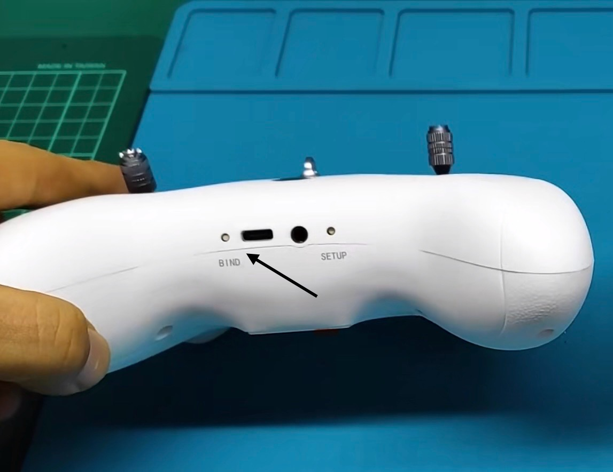

这个不是广告，只是一个使用说明书。
目录
Supported TX List,Keep Updating,支持的遥控器型号列表，不断更新
8. 内置和外置高频头的多协议开源控(Multi protocol Module Installed)
8. MC 迈克mini系列，如mc6mini,mc7mini,mc8mini如何对码？
12. Futaba遥控器切换sfhss协议之后，为什么还是对不上码？
19. Betafpv LiteRadio3 ELRS遥控器如何对码？
2.How To do Binding With You RC Transmitter？
3．How to identify the current working mode?
5. After pairing, how to pair another remote controller?
7. How to pair the Wfly ET system?
8. How to pair the MC Mike mini series, such as mc6mini, mc7mini, and mc8mini?
9. How Modify/upgrade ELRS firmware?
Supported TX List,Keep Updating,支持的遥控器型号列表，不断更新
1.FUTABA
T14SG,T16iZ, T16SZ,T18MZ, T18MZ-WC. T18SZ, T4P, T10px,T8J,T10J,T10JA, T7px,T6J,T6K,T6K-V3S, FX 22, FX 32, LDARC EX8
2.RadioLink乐迪
T8FB,T8S,RC8x,RC4GS,RC6GS,T12D,T16D
3.DUMBORC 小飞象
X6,X6p,X6pm, x10, DDF350
4.FrSky睿思凯
DJT, DHT,XJT , TANDEM X12,X14,X18SE,X20, X20RS, XE,TWIN X LITE,Taranis,X-Lite s/pro,TARANIS X7,X9D, X9D plus, X9D Plus SE, horus x10 ,horus x10s
5. Flysky富斯
FS-i6, FS-i6x, FS-i6s,TH9x, i4X, NV14, GT5, iT3B, iT3C,GT2E,GT2G,GT2F,GT3B/C,GT2，GT2B,FS-T6, T4B,CT6B,WLToys V911, V9x9, Xeida 99×8
6. Microzone迈克
MC6C,E6,MC7,MC8B(2020/6/15)，MC10, MC6CMINI ，MC7MINI , MC8MINI
7.Wfly天地飞
ET06, ET16S, ET16Pro, ET12, ET07, ET08, ET08A, ET10
8. 内置和外置高频头的多协议开源控(Multi protocol Module Installed)
常用的品牌，Jumper, RadioMaster, RadioKing，华科尔等任何控带以下高频头都可以支持，
CC2500高频头， 4in1高频头， 5in1高频头，a7105高频头(有flysky/2a协议）
9. ELRS 2.4G RF 高频头（13in1 Only）
任何 的ELRS 2.4G 高频头，加密狗默elrs的版本是3.5.3 固件版本， 支持3.0以上版本的ELRS高频头。
快速开始

Step1
插入加密狗到你的电脑，手机或MAC的USB口。
Step2
使用加密狗上的按钮，选择一个合适的协议。具体看第一节。
Step3
和遥控器对码，成功后指示灯常亮。具体看FAQ第二节。
Step4
在你的电脑，手机或MAC 安装对应的模拟器软件。
Step5
使用加密狗上的按钮，选择对应的模拟器的工作模式。具体看FAQ第三节和第四节
Step6
打开遥控，插上加密狗，然后打开模拟器软件。
Step7
在模拟器软件设置控制器。 具体每个模拟器都不一样，请按照软件的指示进行设置。
Step8
开始愉快的模拟飞行
FAQ
1.如何选择协议？
指示灯的颜色或闪烁的摩斯电码（三秒一个周期）可以区分协议， 上电后，自动进入对码模式。如果不就对码模式(不是闪摩斯电码)的话，请等待20秒，按一下按钮即可进入对码模式。
在对码模式下，按一下按键会切换一个协议，在12个协议不断循环，请一边按一边观察指示颜色和闪烁的摩斯电码，当你观察到对应的协议，就可以停止按键了，如你需要AHDFS2A富斯二代，你看到指示灯两个紫色就可以了。
| 编号 | 电码 | 描述 | 协议名 | 指示灯颜色 | 支持的遥控器 |
| 0 | ----- | 五长 | FUTABA,SFHSS | T:绿 R:绿 | T14SG,T16SZ/IZ, T18SZ, T4P, T10px, T7px， T6J.. |
| 1 | .---- | 一短四长 | RADIOLINK, | T:红 R:绿 | T8FB,T8S,RC8x,RC4GS,RC6GS,T12D,T16D |
| 2 | ..--- | 两短三长 | RADIOLINK_DUMBORC, | T:蓝 R:绿 | DUMBORC, 小飞像X6,X6p,X6pm, DDF350 |
| 3 | ...-- | 三短两长 | FRSKYD8, | T:黄 R:绿 | X9D,X9D+, DJT, DHT… |
| 4 | ....- | 四短一长 | FRSKY_D16FCC,ACCST | T:紫 R:绿 | XJT , TANDEM X12,X14,X18SE,X20,XE,TWIN X LITE,Taranis,X-Lite s/pro,TARANIS X7,X9D/plus,horus x10/s |
| 5 | -...- | 一长三短一长 | FRSKY_D16LBT,ACCST | T:红 R:紫 | XJT , TANDEM X12,X14,X18SE,X20,XE,TWIN X LITE,Taranis,X-Lite s/pro,TARANIS X7,X9D/plus,horus x10/s |
| 6 | -.... | 一长四短 | FRSKY_D16v2FCC,,ACCST | T:蓝 R:紫 | XJT , TANDEM X12,X14,X18SE,X20,XE,TWIN X LITE,Taranis,X-Lite s/pro,TARANIS X7,X9D/plus,horus x10/s |
| 7 | --... | 两长三短 | FRSKY_D16v2LBT,,ACCST | T:黄 R:紫 | XJT , TANDEM X12,X14,X18SE,X20,XE,TWIN X LITE,Taranis,X-Lite s/pro,TARANIS X7,X9D/plus,horus x10/s X |
| 8 | ---.. | 三长两短 | AHDFS2A , | T:紫 R:紫 | FS-i6/x/s,TH9x,i4X,NV14, GT5, iT3B/C, GT2E/G/F… |
| 9 | ----. | 四长一短 | AHDFS , | T:红 R:蓝 | GT3B/C,GT2/B,FS-T6, T4B,CT6B,WLToys V911, V9x9, and Xeida 99×8… |
| 10 | .-.-.- | 一短一长三次 | MC6C , | T:蓝 R:蓝 | MC6C,E6,MC7,MC8B(2020/6/15)，MC10, MC6C/7MINI… |
| 11 | ..--.. | 两短两长两短 | WFLY2 , | T:黄 R:蓝 | ET06, ET16/S, ET12, ET07, ET08… |
| 12 | -..-. | 1长2短 1长 1 短 | ELRS | T： 蓝 R： 白 | ERLS （仅在13合1版本存在） |
2.如何对码？
2.1 通用的对码操作
切换到正确的协议后，开遥控进入对码，稍等一会（通常1分钟以内），观察到提示灯快闪熄灭重启，就表示对码成功，有些协议指示灯直接就长亮了，部分协议不会马上长亮，此时重启一下遥控就可以了。
| 视频教程 |
| 天地飞et16s和万能无线加密狗对码教程_哔哩哔哩_bilibili |
| 迈克mc6c和万能无线航模加密狗对码教程_哔哩哔哩_bilibili |
| 使用futaba的SFHSS协议和无线加密狗对码_哔哩哔哩_bilibili |
| 乐迪遥控器和万能无线加密狗对码教程_哔哩哔哩_bilibili |
| 对过码的加密狗如何和另外一个遥控器对码，如MC7Cmin_哔哩哔哩_bilibili |
2.2 更换遥控器对码
如果你想让加密狗和另一个遥控器对码，那么，你需要关掉旧的遥控器，然后重新插拔一下加密狗，然后再等20秒，再短按一下加密狗的按钮，它就会重新进入对码模式了。然后你打开新的遥控器进行对码即可。
| 视频教程 |
| 对过码的加密狗如何和另外一个遥控器对码，如MC7Cmin_哔哩哔哩_bilibili |
| 如何让elrs协议下的加密狗重新进入对码_哔哩哔哩_bilibili |
2.3 ELRS协议的对码
关于ELRS的对码，对码方式其实和普通的ELRS接收机对码方式是完全一样的。首先必须切换ELRS协议（13in1版本默认是ERLS协议，LED是一白一蓝），切换到ELRS后，白灯为协议摩斯电码，蓝色灯则为ELRS的接收指示灯。 这时对和普通的ELRS接收机是完全一样的，当蓝色状态灯双闪才是对码状态，第一次使用正常默认就是对码状态，蓝色状态灯双闪。如果不是对码状态，蓝色状态灯不是双闪。那么需要你手动操作让它进入ELRS对码模式，你可以使用以下其中任一办法：
2.3.1 连续快速上电三次
2.3.2 等60秒左右，看蓝色灯快闪，ELRS接收机就会进入wifi，使用设备连接名为expressLrs的wifi (密码：expresslrs), 打开网页设置对码，或填入密码对码。
2.3.3 如看到白色1长两短一长一短的闪(如白灯不是的这样闪的话，等20秒后按一下按钮，白灯就会变成这样闪）， 按一下加密狗的按钮，就会进入对码模式，蓝灯双闪。如果不行，那么按2.3.4操作
2.3.4 如看到白色1长两短一长一短的闪(如白灯不是的这样闪的话，等20秒后按一下按钮，白灯就会变成这样闪）， 长按2秒以上加密狗的按钮，松手 ，就会进入对码模式，蓝灯双闪
当ELRS进入对码模式，就可以使用遥控器的elrs菜单的bind进行对码（如果是密码对码方式，不需要操作这一步），对码成功后，蓝色灯会由双闪变成常亮。要是加密狗的蓝色灯还是慢慢单闪，那就是就elrs控制器的设置问题了，到ELRS的菜单项，Model Match这里，把它设置成ON，然后再切换到OFF，稍等一会，ELRS就会常亮，然后白色灯也会常亮。
ELRS的固件是HGLRC_HERMES_2400_RX_3.5.2, 需要 TX 也是ELRS 3.x 以上的固件才可以对码。要是有问题可以自行使用wifi升级内置elrs的接收机固件。
Betafpv有一个lite radio 3 elrs 是没有屏幕的，对码方法 请看 19. Betafpv LiteRadio3 ELRS遥控器如何对码？
| 视频教程 |
| elrs遥控器和万能无线加密狗对码教程_哔哩哔哩_bilibili |
3．怎么知道当前的工作模式？
对码成功后，关掉遥控，观察指标灯（ELRS协议下只看白色灯）的每3秒闪多少下，就是模式几。
| 模式 | 指标灯状态 | 支持模拟器 |
| 1.PHOENIX | 每3秒闪一下 | 凤凰(Phoenix RC 5-6) |
| 2.XTR | 每3秒闪两下 | REFLEX XTR，FREE RIDER, LIFT OFF, DRL，HotProns, Next, Uncrashed, Heli X… |
| 3. AERO | 每3秒闪三下 | AEROFLY, Tryp, RealFlight9.5 |
| 4.XBOX360 | 每3秒闪四下 | 基本其它所有的游戏都能玩,如DJI大疆模拟器，地平线5，GTA5等 |
4．切换工作模式
对码成功后，关闭遥控，加密狗重新上电后，按住加密狗的按键，不松手，观察加密狗的指示灯（ELRS协议下只看白色灯），它会循环切换模式，观察到需要的模式，如模式二，就是看到指示灯（ELRS协议下只看白色灯）每三秒闪两下，松开按键，指标灯会自动快闪重启，切换模式就成功了。
| 视频教程 |
| 万能无线航模加密狗切换工作模式教程_哔哩哔哩_bilibili |
| elrs协议下的加密狗如何切换工作模式_哔哩哔哩_bilibili |
5. 对码后，想换另一个遥控器对码使用，如何操作？
5.1 关掉原来的遥控器
5.2 重新插拔加密狗(不要按按钮）， 等待20秒后
5.3 按一下按钮，就会重新进入对码模式
6. 对码后，如何测试遥控器遥杆和按键的状态?
设置到模式2，3，4，然后打开windows到控制面板，找到USB控制器，点属性
7. 天地飞ET系列为什么显示对码失败？
对码时，遥控器会提示对码失败，不用管，直接退出对码，看到指标灯常亮就可以了。
另外，部分天地飞的遥控升级了最新的固件，如ET16s, 升级了固件 1.1.60，对码快闪后，重启加密狗也无法常亮，原因是遥控的模型选择有问题，解决办法：使用模型1，17-30来对码就可以了。
8. MC 迈克mini系列，如mc6mini,mc7mini,mc8mini如何对码？
mc6mini需要切换到旧的协议，B站有切换教程,就是底下四个设置按钮，ELE和RUD(左起第2个和第4个)，同时按一下即可。迈克6C MINI射频切换_哔哩哔哩_bilibili
其它mini的控进入遥控的菜单，选择接收机为mc7rb即可。
9. 如何修改/升级ELRS固件？
关控，插上加密狗，等60秒，让elrs进入快闪wifi模式。然后连接上热点ExpressLRS RX(wifi密码：expresslrs) ，使用wifi升级。 ELRS的固件使用任何esp8525的单天线的版固件都可以。
Flashing firmware ELRS WIFI
10. 为什么长按按钮切换模式灯不亮？
是因为按早了，大部分是因为按住的按钮再插，解决办法：重新插拔，插上看到灯亮了再按。
11. 为什么按按钮切换模式没有反映？
可能原因：
11.1 没有按要求关闭遥控，解决办法：关闭遥控，加密狗重新插拔
11.2 关闭遥控之后，加密狗没有重新插拔，解决办法：加密狗重新插拔
11.3 按得太迟了，上电超过20秒了，解决办法：加密狗重新插拔，插上，20秒内长按
11.4 还没有对码成功，解决办法：先对码，再回来操作
11.5 只是短按了一下按钮就松手了，解决办法：加密狗重新插拔，插上后，长按不放手。
12. Futaba遥控器切换sfhss协议之后，为什么还是对不上码？
有可能是以下原因：
12.1 加密狗的灯不是两个绿色，解决办法： 按加密狗的按钮，直到它是两个绿色
12.2 遥控器设置成教练模式，发射状态显示，“教练”，解决办法：遥控器关闭教练模式，选择正常模，回到遥控器的主界面，确认状态显示“发射中”的字样或者图标。如下图。
12.3 因为切换的时遥控器的遥杆和按钮没有回中，发射状态显示，”发射停止”，解决办法：把遥杆和按钮归位，油门最低，然后关掉遥控，再打开，确认状态显示“发射中”的字样或者图标。
13. Futaba 如何切换到s-fhss？
13.1 T14sg 主界面左边，如下图“MULT”字样处选择进入菜单进行选择
13.2 T16/18... 到系统菜单，列表里选择SFHSS
14. 对码好了之后，为什么打开Liffoff没有反应？
12in1的加密狗默认出厂工作模是 模式1，是用来玩凤凰的。解决办法，按上面的说明，把加密狗切换到模式2
15. 对码好了之后，为什么打开凤凰没有反应？
可能原因：
15.1 工作模式不是模式1，解决办法：按上面的说明，把加密狗切换到模式1
15.2 凤凰软件没有配置好遥控器，解决办法：
15.2.1 打开 凤凰左上角菜单，选择“新建遥控器”，仔细按向导一步一步设置和校准好遥控器。
15.2.2 打开 凤凰左上角菜单，选择“新建配置”，仔细按向导一步一步设置和校准好遥控器。
16. Frsky的遥控器怎么对码？
Frsky的遥控请注意要选择ACCST，不要选ACCESS。可以选D8或者四个D16协议任一个。
Frksy D16有四个版本，比较多，分v1和v2两个新老版本，然后还分FCC标准和LBT的欧洲标准。需要一个一个试，可以先让遥控器进入对码状态，然后按一下按钮等3秒左右，要是没有看到快认，就再按一个换一个协议，直接看到快闪，就对码成功了。
正常中国是FCC的两个版本其中之一，即LED为蓝+紫色.
17. 可以使用教练模式，两个人同时控制一个模拟器吗？
可以的！解决办法：
16.1 准备两个遥控器，遥控要支持教练模式和学员模式。
16.2 一个遥控器设置为学员，一个遥控设置为教练，设置好练练开关。同时使用数据线把两个遥控器的教练口连接起来。
16.3 教练遥控打开发射，和加密狗对码。根据所使用的软件，设置正确的工作模式。请参考上面的说明进行设置。
16.4 完成上面的步骤，打开模拟器软件，就可以了。
18.支持哪些模拟器软件？哪里可以下载？
本产品可以支持任何正版的模拟器和游戏，在STEAM你可以下载到。请支持正版软件，只有你们的支持，才会有更多人愿意去开发更好的模拟器和游戏。
如果你只是想试用一下，可以找客服要试用版本。
19. Betafpv LiteRadio3 ELRS遥控器如何对码？
1.把加密狗插到电脑，默认看到一白一蓝在闪，蓝色是双闪。
2. 打开 Betafpv LiteRadio3 ELRS遥控器， 把摇杆按钮归位，油门打到最低位置，确保看到遥控器的指标灯是蓝色的，而不是红色的。
3. Betafpv LiteRadio3 ELRS遥控器 左下角一个BIND按钮，使用牙签按一下它就可以对码。
4. 到这里应该看到加密狗的蓝色灯从双闪变成单闪，要是不是的话，拔出加密狗，再操作一次第3步。
5. 稍等一会，加密狗白灯和蓝灯长亮，对码就是成功了。

20. 为什么换了一个遥控器无法使用了？
1. 换遥控器是需要要重新对码的，请看第2.2小节
Quick Start
Step1
Insert the dongle into the USB port of your computer, mobile phone or MAC.
Step2
Use the button on the dongle to select a suitable protocol. See section 1 for details of FAQ.
Step3
Do Bingding with your remote controller. The LED of dongle will be stable if binding success , please refer to Section 2 of the FAQ.
Step4
Install the corresponding emulator software on your computer, mobile phone or MAC.
Step5
Use the button on the dongle to select the appropriate working mode. Specifically, see sections 3 and 4 of the FAQ
Step6
Turn on the remote control, plug in the dongle, and open the emulator software.
Step7
Set up the controller in the simulator software. Each simulator is different, please follow the instructions of the software to set it up.
Step8
Start the Fun Flight Simulator
FAQ
1.How To choose a protocol?
After switching to the correct protocol, turn on the RC transmitter , make it the binding state, wait for a while, observe the Dongle’s light , it would flashing quickly and become stable, binding is done. In Some protocol, indicators will become stable directly, but some will not be stable immediately, at this time , restart the RC transmitter, then it would work.
If you want the dongle to binding with another remote, then you can turn off the old remote control, then plug and unplug the dongle again, then wait 20 seconds, press the dongle button again, and it will re-enter the binding mode. Then you can open the new remote control Transmitter and do the binding.
| # | Codes | Desc | Protocol | Led Color | Transimitter |
| 0 | ----- | 5long | FUTABA,SFHSS | T:Green R:Green | T14SG,T16SZ/IZ, T18SZ, T4PM, T10px, T7px,T6J |
| 1 | .---- | 1Short 4Long | RADIOLINK, | T:Red R:Green | T8FB,T8S,RC8x,RC4GS,RC6GS,T12D,T16D |
| 2 | ..--- | 2Short 3Long | RADIOLINK_DUMBORC, | T:Blue R:Green | DUMBORC, X6,X6p,X6pm, DDF350 |
| 3 | ...-- | 3Short 2Long | FRSKYD8, | T:Yellow R:Green | X9D,X9D+, DJT, DHT… |
| 4 | ....- | 4Short 1Long | FRSKY_D16FCC,ACCST | T:Purple R:Green | XJT , TANDEM X12,X14,X18SE,X20,XE,TWIN X LITE,Taranis,X-Lite s/pro,TARANIS X7,X9D/plus,horus x10/s |
| 5 | 1Long 3Short 1Long | FRSKY_D16LBT,ACCST | T:Red R:Purple | XJT , TANDEM X12,X14,X18SE,X20,XE,TWIN X LITE,Taranis,X-Lite s/pro,TARANIS X7,X9D/plus,horus x10/s | |
| 6 | -.... | 1Long 4Short | FRSKY_D16v2FCC,ACCST | T:Blue R:Purple | XJT , TANDEM X12,X14,X18SE,X20,XE,TWIN X LITE,Taranis, X-Lite s/pro,TARANIS X7,X9D/plus,horus x10/s |
| 7 | --... | 2Long 3Short | FRSKY_D16v2LBT,ACCST | T:Yellow R:Purple | XJT , TANDEM X12,X14,X18SE,X20,XE,TWIN X LITE,Taranis, X-Lite s/pro,TARANIS X7,X9D/plus,horus x10/s |
| 8 | ---.. | 3Long 2Short | AHDFS2A , | T:Purple R:Purple | FS-i6/x/s,TH9x,i4X,NV14, GT5, iT3B/C, GT2E/G/F… |
| 9 | ----. | 4Long 1Short | AHDFS , | T:Red R:Blue | GT3B/C, GT2/B, FS-T6, T4B,CT6B，WLToys V911, V9x9, and Xeida 99×8… |
| 10 | .-.-.- | 1S1L 1S1L 1S1L | MC6C , | T:Blue R:Blue | MC6C,E6,MC7,MC8B( after 2020/6/15)，MC10… |
| 11 | ..--.. | 2S 2L 2S | WFLY2 , | T:Yellow R:Blue | ET06,ET16/S,ET12,ET07,ET08… |
| 12 | -..-. | 1L2s1L1s | ELRS | T:Blue R:White | ERLS ,Only available in 13in1 Version |
2.How To do Binding With You RC Transmitter？
2.1 Common Bind Step
After switching to the correct protocol, turn on the remote control to enter the pairing mode. After a while, if you observe that the indicator light flashes quickly and then turns off and restarts, it means that the pairing is successful. Some protocol indicator lights will stay on directly, while some protocols will not stay on immediately. At this time, just restart the remote control.
2.2 Bind with Another New TX
If you want to pair the dongle with another remote control, then you can turn off the old remote control, then re-plug the dongle, wait 20 seconds, and press the button of the dongle again, it will re-enter the pairing mode. Then you can turn on the new remote control to pair.
2.3 Bind with ELRS TX
Regarding the pairing of ELRS, the pairing method is actually exactly the same as that of ordinary ELRS receivers. First, you must switch the ELRS protocol (the default for the 13in1 version is the ERLS protocol, and the LEDs are one white and one blue). After switching to ELRS, the white light is the Morse code of the protocol, and the blue light is the receiving indicator of ELRS.At this time, the pairing is exactly the same as that of the ordinary ELRS receiver. When the blue status light flashes twice, it is in the pairing state. The first time you use it, the normal default is the pairing state, and the blue status light flashes twice. If it is not in the pairing state, the blue status light does not flash twice. Then you need to manually operate it to enter the ELRS pairing mode. You can use any of the following methods:
2.3.1 Re-plug the dongle, Wait 20 seconds, Press the button of the dongle's button once , wait 1 second, then press the dongle's button one more time.
2.3.2 Power on three times in a row
2.3.3 Wait for about 60 seconds, and when the blue light flashes quickly, the ELRS receiver will enter the wifi. Use the device to connect to the wifi named expressLrs, open the web page to set the pairing, or fill in the password to pair.
When ELRS enters the pairing mode, you can use the bind in the elrs menu of the remote control to pair (if it is password pairing, this step is not required). After the pairing is successful, the blue light will change from double flashing to constant on. If the blue light of the dongle is still flashing slowly, it is a problem with the settings of the elrs controller. Go to the ELRS menu item, Model Match, set it to ON, then switch it to OFF, wait a while, ELRS will be constant on, and then the white light will also be constant on.
The firmware of ELRS RX is HGLRC_HERMES_2400_RX_3.5.2, and the TX needs to be ELRS 3.x or above for pairing. If there is any problem, you can use wifi to upgrade the firmware of the built-in elrs.
2.4 FAQ about binding
2.4.1 Some remote controllers, such as Wfly ET system, will prompt that the pairing fails. At this time, please ignore the remote controller's prompt. As long as you see the indicator of the dongle flashing quickly, the remote controller can exit the pairing state, the dongle will be on all the time, and the pairing is successful.
2.4.2 mc6mini needs to switch to the old protocol. There is a switching tutorial on B station. It starts with the four mixers below, the second and fourth from the left, and you can press them at the same time. MC7MINI, MC8MINI, please select MC7RB in the menu
2.4.3 For Frsky's remote control, please note that you should select ACCST, not ACCESS. Frksy D16 has four versions, which are quite a lot. They are divided into two new and old versions, v1 and v2, and then divided into FCC standards and LBT European standards. You need to try one by one. You can first put the remote control into the pairing state, then press the button and wait for about 3 seconds. If you don’t see the quick recognition, press another one to change the protocol. If you see the quick flash directly, the pairing is successful.
2.4.4 Wfly ET16s has been upgraded to version v.1.1.60 or above. When pairing, you need to select model 1, or 17-30 to successfully pair.
3．How to identify the current working mode?
After the binding is successful, turn off the rc transmitter, and observe how many flashes of the indicator light （White LED ONLY in ELRS ） every 3 seconds, which is the mode number.
| Mode | LED | Simulators |
| 1.PHOENIX | 1 flash every 3 Seconds | Phoenix RC 5-6 |
| 2.XTR | 2 flash every 3 Seconds | REFLEX XTR，FREE RIDER, LIFT OFF ，DRL，HotProns, Next, Uncrashed, Heli-X, |
| 3. AERO | 3 flash every 3 Seconds | AEROFLY , Tryp, Aero fligh RC, RealFlight9.5 |
| 4.XBOX360 | 4 flash every 3 seconds | All most any other games， such as Forza Horizon 5， GTA5, DJI simulator. |
4．How to Change Working Mode?
After the binding is successful, turn off the remote control, Pull out the dongle from the USB port, then insert it again. Press and hold the button, the indicator light（White LED ONLY in ELRS) will cycle to switch modes, and observe the required mode, such as mode two, that is, to see two flashes every three seconds, release the button, the indicator light（White LED ONLY in ELRS) will automatically flash quickly and restart, and the switching mode will be successful.
The color of the indicator（White LED ONLY in ELRS) or the flashing Morse code (three seconds per cycle) can distinguish the protocol, and after powering on, it will automatically enter the code binding mode. If you don't have the binding mode (not flashing Morse code), please wait for 20 seconds and press the button to enter the binding mode.
5. After pairing, how to pair another remote controller?
5.1 Turn off the original remote controller
5.2 Re-plug the dongle (do not press the button), wait for 20 seconds
5.3 Press the button of the dongle , it will re-enter the pairing mode
6. After pairing, how to test the status of the remote controller joystick and buttons?
Set to mode 2, 3, 4, then open Windows to the control panel, find the USB controller, and click Properties
7. How to pair the Wfly ET system?
Some Wfly ET remote controllers have upgraded to the latest firmware. you have to pair with model 1， and 17-30 only. When pairing, the remote controller will prompt that the pairing failed. Don't worry about it. Just exit the pairing and see the dongle's indicator light is stable on.
8. How to pair the MC Mike mini series, such as mc6mini, mc7mini, and mc8mini?
mc6mini needs to switch to the old protocol. There is a switching tutorial on B station. It starts with the four mixers below, the second and fourth from the left, and you can press them at the same time.
For other mini series controllers, enter the remote control menu and select mc7rb as the receiver.
9. How Modify/upgrade ELRS firmware?
Use wifi as the regular ELRS receiver.